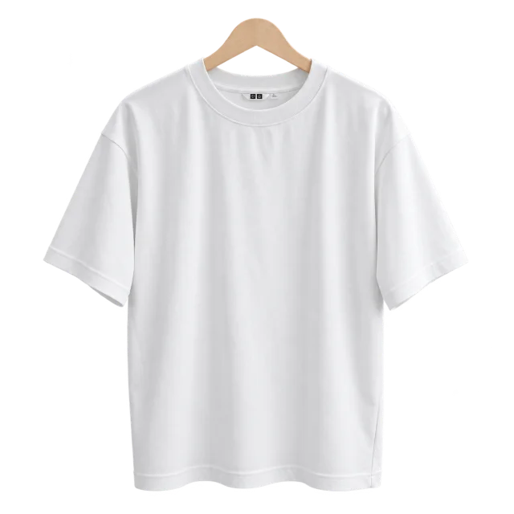
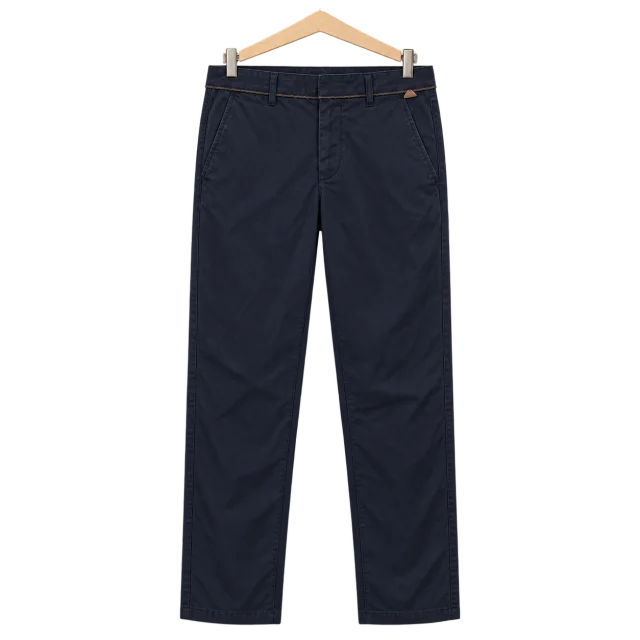
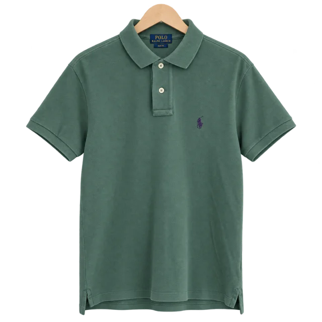
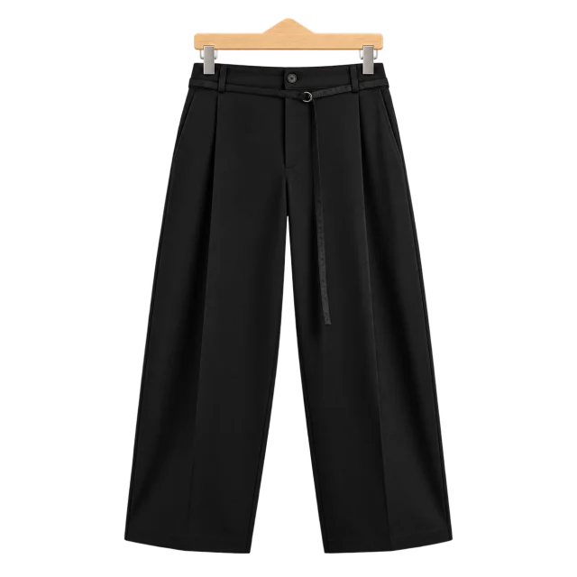
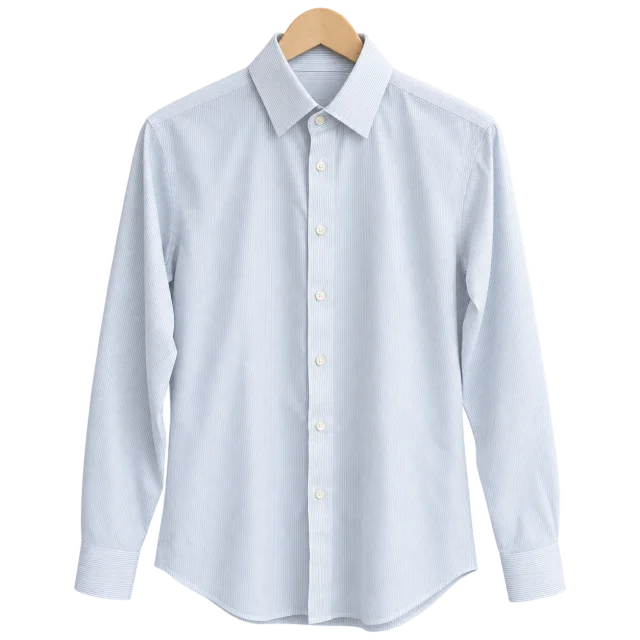
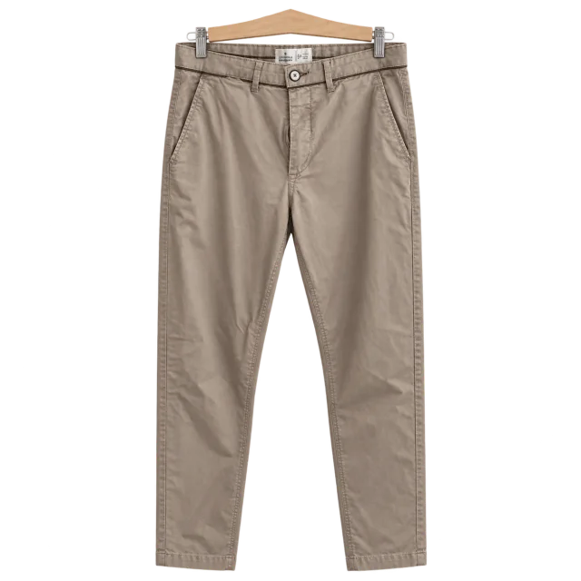
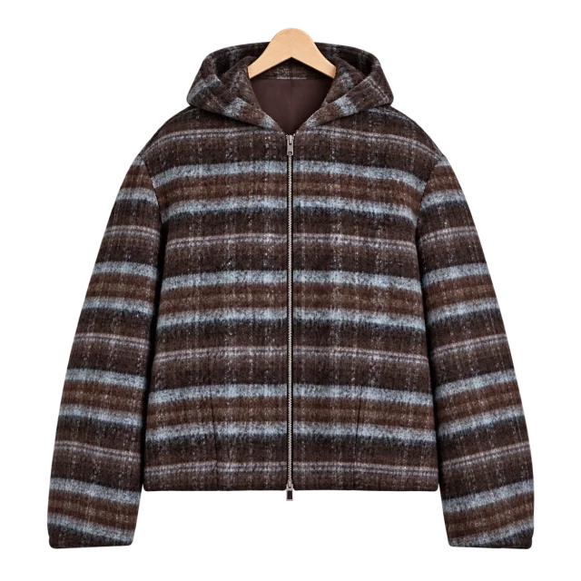
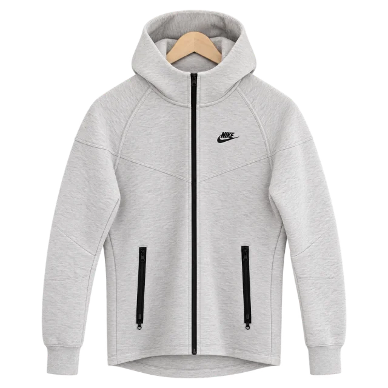
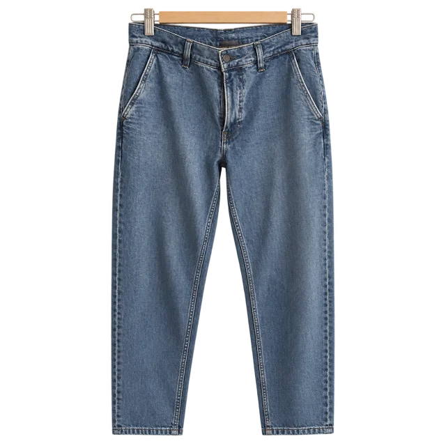
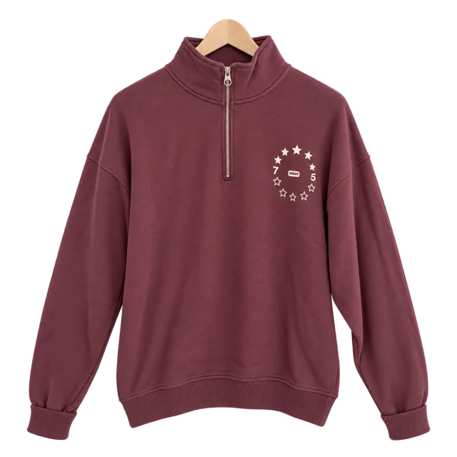

Pruébalo: coloca estas 10 prendas
Son diez prendas de mi armario real, recreadas sobre percha. Colócalas por color, por tipo o en dos baldas, arriba y abajo. Pasa el cursor o toca una prenda para sacarla de la barra.
Como llegaron: sin orden.Por color: neutros de claro a oscuro, después por tono.Por tipo: las iguales, juntas.Arriba y abajo: lo que va cerca de la cara, primero.Mezcladas. Vuelve a colocarlas.ArribaAbajo









